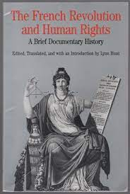
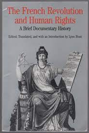

Interactive Papers
Antoine Barnave
, “Speech to the National Assembly” (1790), From Lynn Hunt, ed., and trans.,
The French Revolution and Human Rights: A Brief Documentary History
(Boston: Bedford/St. Martin’s, 1996), 109-111, part of the document is an original translation by David Kammerling Smith from Archives parlementaires (Paris) 12 (1881): 68-70, reprinted in Richard Lim and David Kammerling Smith, eds., The West in the Wider World (New York: Bedford/St. Martin’s, 2003), 147-150.
Collective Analysis
[Part 1]
[Part 2]
Sirs, the commerce [the merchant community] of France has made known to you its wishes and its worries on several objects in which it is interested, and particularly on the various relations between France and her colonies. At the same time that these petitions [from French merchants] were addressed to you, news arrived from Saint Domingue and Martinique that held all of your attention. You sensed the necessity of taking, with regard to the colonies, a wise and prompt resolution. And perceiving an intimate connection between the causes of their [the two colonies’] agitation and the requests of commerce, you named a committee to investigate these together and present to you an outcome proper to reconcile the various interests. In discerning, Sirs, the goals of our mission, we soon recognized that all the questions that are presented reduce themselves, at the present moment, to extremely simple terms. The interest of the French nation to support its commerce, to preserve its colonies, and to favor their prosperity by every means compatible with the interests of the metropole [homeland], appeared to us, by every point of view, as an incontestable truth. The measures to take, in order to achieve this, appeared to us not less clearly indicated by the principles and by the circumstances. Reassure the colonies on their mot dear interests, receive from the instructions on the system of government which is convenient to their prosperity and that it is finally time to establish; invite them to present their views, concurrently with French commerce, on their reciprocal relations: such is the procedure that the circumstances, justice, and reason have appeared to prescribe to us. . . . It is not a question, in fact, of examining if France should seek to establish a commerce or to found some colonies. These things already exist. At the moment in which we are speaking, all the aspects of our social existence are intimately linked and merged with the existence of large-scale trade with our colonies. Thus, it is only a question of knowing if the suppression, if the sudden loss of these immense resources would not produce a violent and destructive jolt, would not be a great disaster for the nation? It is a question of knowing above all if, in our present situation, engaged in a revolution of which the completion assures forever the glory and prosperity of the French nation and of which the failure will plunge the French nation into an unfathomable evil, this violent jolt would not present the most formidable stumbling block; if the situation of our finances would not suffer from this a blow without remedy; if the force of the malcontents would not increase from this beyond all proportion; if, finally, the constitution, which alone would be able with time to repair these great calamities, would not be itself overthrown by this. When one is willing to consider the question from these points of view, the question no longer will present any doubts; one will appreciate that it is necessary above all, to prevent the evils that most closely menace us, and that all other speculations become foreign when it is a question of the sacred interest of the Revolution and of the destiny of the several million Frenchmen who are attached to the prosperity of our commerce, to the possession of our colonies.
It would be, in fact, the fruit of a great ignorance, or of a strange evil faith, to claim to separate the prosperity of national commerce from the possessions of our colonies.
Our colonies not only constitute the greatest portion of our maritime and exterior relations, but the value of our agricultural produce, the activity of our industries, our transports, our internal commerce, are, in large measure, the effect of our relations with the colonies. . . .
Abandon the colonies, and these sources of prosperity will disappear or diminish.
Abandon the colonies, and you will import, at great price, from foreigners what they buy today from you.
Abandon the colonies at the moment when your establishments there are based on possessing them, and listlessness will replace activity, misery abundance: the mass of workers, of useful and hardworking citizens, will pass quickly from a state of ease into the most deplorable situation; finally, agriculture and our finances will soon be struck by the same disaster experienced in commerce and manufactures.
And how easy would it be, in carrying these issues further, to establish the relationship of this branch of our commerce with all its other branches, with our maritime existence, and with the general system of European power? . . .
You should only, you can only speak here one language, that of truth, which consists in disavowing the false extension that has been given [to some of your decrees]. You have not been able to change anything in all of what concerns the colonies, for the laws that you have decreed did not have them in mind; you have not been able to change anything because public security and humanity itself would offer insurmountable obstacles to what your hearts have inspired in you [the abolition of the slave trade or of slavery itself]. Let us say ti then at this moment, since doubts have been raised: you have broken no new ground. This declaration will suffice; it can leave no alarm remaining. It is only just to accompany it with an arrangement suitable for reassuring the colonies against those who, with criminal plots, would seek to bring trouble there, to excite uprisings there. These men whom some have affected to confuse with peaceful citizens occupied with seeking through reflection means for softening the destiny of the most unfortunate portion of the most unfortunate portion of the reflection means for softening the destiny of the most unfortunate portion of the human race [the slaves], these men, I say, only have perverse motives and can only be considered as enemies of France and of humanity. . . .
Here then, Sirs, is the project for a decree that your committee has unanimously voted to propose to you: . . .
Declares that, considering the colonies as a part of the French empire, and desiring to enable them to enjoy the fruits of the happy regeneration that has been accomplished in the empire, it never intended to include them in the constitution that it has decreed for the kingdom or to subject them to laws which might be incompatible with their particular, local proprieties. . . .
Moreover, the National Assembly declares that it never intended to introduce innovations into any of the branches of indirect or direct commerce between France and its colonies [thus it leaves the slave trade untouched] and hereby puts the colonists and their properties under the special protection of the nation and declares criminal, toward the nation, whoever works to excite uprisings against them.
 
The French Revolution and Human Rights: A Brief Documentary History

The French Revolution and Human Rights: A Brief Documentary History